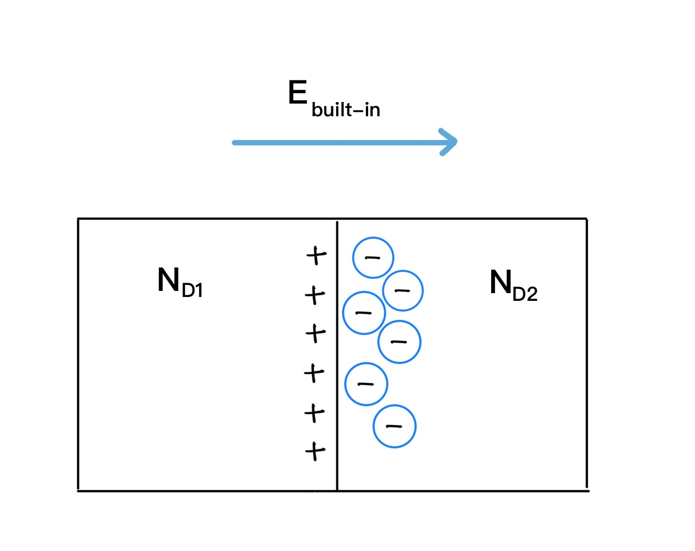

Non Uniform Doping Of Semiconductor
Thermal Voltage
The term kT/q is known as the Thermal Voltage (VT) and is a fundamental parameter in semiconductor physics. At room temperature (300K), its value is approximately:
Where:
- k is the Boltzmann's constant = 1.38×10-23 J/K
- T is the absolute temperature in Kelvin
- q is the electronic charge = 1.6×10-19 Coulombs
The thermal voltage is used extensively in semiconductor device analysis, numeric solving, and understanding carrier behavior under various conditions. It represents the voltage equivalent of thermal energy and plays a crucial role in determining carrier distributions and current flow.
Einstein's Relationship
This equation relates the diffusivity and mobility together.
Non-uniformly Doped Junctions
Assume a semiconductor bar divided into two parts (say, part 1 & part 2) such that each part is doped with n type of dopant ( or both with p type) but at different concentrations: lets say, ND1 and ND2 respectively such that ND1>ND2. Whole silicon as well as each individual part is neutral (has no net charge) right after doping.
As part1 has higher concentration of mobile electrons than part 2, the
mobile electrons from part 1 will diffuse to part 2 (diffusion from higher gradient to lower gradient). Now, part 1 will become positively charged as it has lost electrons, and part 2 will gain some electrons. Since part 1 is positively charged, and part 2 is negatively charged, an electric field will arise that points from part 1 to part 2. This is called the Built-In Electric Field. Built in field results drift current which opposes the diffusion current. The charge separation and the built-in field are shown in the
bottom of below.
In summary, when we have a region of high doping concentration next to a region of low doping concentration in equilibrium, then we will wind up with a built in electric field (and a built in potential), and the drift current will be equal and opposite to the diffusion current.

(Fig 5.1)The net (total) current equation will be
Where:
- n is the electron concentration
- dn/dx is the electron concentration gradient
- φ (phi) is the electrostatic potential
- The electric field E is related to the electrostatic potential by the fundamental relation:
This relationship is fundamental in semiconductor physics and shows that the electric field is the negative gradient of the electrostatic potential. Therefore, dφ/dx represents the negative of the electric field.
Since in equilibrium, net current is zero,
Using Einstein’s relationship and rearranging the terms, we get
When integrated from x1 to x2,
We obtain,
If n1= ND1 and n2=ND2 as in case of the semiconductor bar, we get built in potential φBI as
Corollary, this can be applied for finding potential built up between any two doping concentrations. If one of the dopings is intrinsic value, we get
Mass Action Law
The Mass Action Law is a fundamental principle in semiconductor physics that relates the electron and hole concentrations in thermal equilibrium. It states that the product of electron concentration (n) and hole concentration (p) is always equal to the square of the intrinsic carrier concentration (ni), regardless of the doping level:
This relationship holds true at thermal equilibrium for any semiconductor, whether it is:
- Intrinsic (undoped): n = p = ni
- N-type (donor-doped): n >> p, but n·p = ni2
- P-type (acceptor-doped): p >> n, but n·p = ni2
For example, in an N-type semiconductor with donor concentration ND >> ni:
- Majority carrier (electrons): n ≈ ND
- Minority carrier (holes): p = ni2/ND
Similarly, in a P-type semiconductor with acceptor concentration NA >> ni:
- Majority carrier (holes): p ≈ NA
- Minority carrier (electrons): n = ni2/NA
The mass action law is crucial for understanding carrier behavior in doped semiconductors and is extensively used in device analysis and simulation.
Space Charge Region or Depletion region.
When mobile majority carriers diffuse out from doped semiconductor, immobile charged dopant atoms remain behind. The region from where mobile carriers have diffused away is devoid of mobile charges and is called the Depletion region. Width of the depletion region will depend on doping concentration.
Other junctions:
(a) PN junction: When semiconductor junction is doped, such that one side is p-type and other side is n-type, it is called a PN junction. Diffusion and Drift happen similar to as in a non-uniformly doped junction. (We will go into more detail in the next module).
(b) Linearly graded junction, as the name implies is a special PN junction, where doping concentration changing linearly with location.
(c) Hyper-abrupt junctions, are PN junctions where doping profile on one side decreases away from the metallurgical junction.